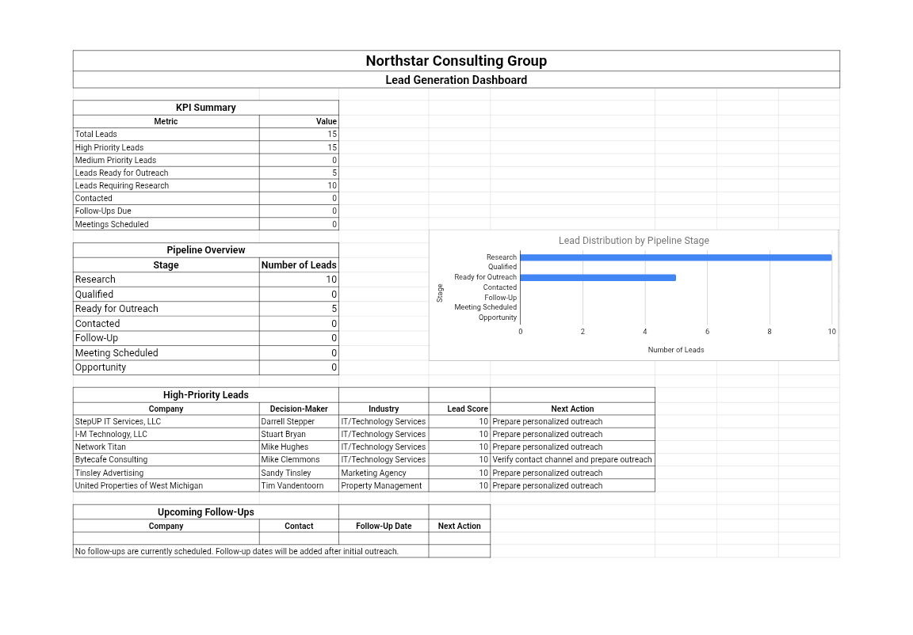

Lead Generation & CRM
Lead Generation & Prospecting System
A structured prospecting workflow covering ideal client research, lead qualification, CRM pipeline management, outreach templates and reporting.

Overview
This project is an independent portfolio demonstration created to demonstrate practical business workflows. It presents a structured lead generation and prospecting system that organizes the full journey from ideal client research through lead qualification, CRM pipeline management and outreach.
Business Scenario
Outreach and business development depend on a steady flow of qualified prospects. Without structure, lead lists become messy, follow-ups are missed and outreach quality drops. This demonstration shows how a practical prospecting system can bring order to that process.
Objective
To build a clear, repeatable prospecting workflow that organizes ideal client research, lead qualification, CRM pipeline stages, outreach templates and follow-up tracking, so that prospecting work stays structured and visible.
What Was Built
A set of structured documents and tracking sheets covering: an ideal client profile template, a lead research and qualification sheet, a CRM pipeline tracker with stages, an outreach template library and a prospecting reporting view.
Workflow / Process
The workflow begins with defining the ideal client profile, followed by prospect research to identify potential leads. Leads are then qualified against clear criteria and entered into a CRM pipeline with defined stages. Outreach is prepared using reusable templates, and follow-ups are tracked to ensure no prospect is dropped.
Reporting provides a simple view of pipeline status, outreach activity and next steps.
Tools Used
Google Sheets for pipeline tracking and reporting, Google Docs for templates and documentation, and Google Drive for organized file storage.
Skills Demonstrated
Key Takeaways
- A defined ideal client profile makes prospect research more focused and efficient.
- Clear qualification criteria keep the pipeline organized and consistent.
- Reusable outreach templates reduce preparation time and improve consistency.
- Pipeline tracking with stages makes prospecting progress visible at a glance.